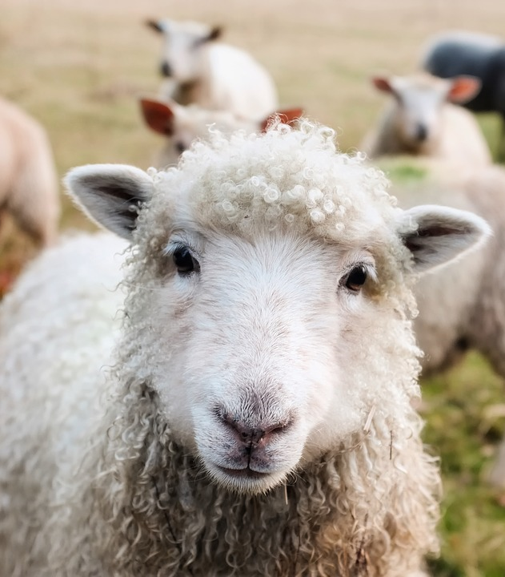

Home > 회사소개 > 대표인사말

안녕하세요! 조은축산설비 입니다.
저희 홈페이지 방문을 환영합니다.
조은축산설비의 홈페이지를 찾아 주신 분들께 감사드립니다.
저희 조은축산설비는 축산 기자재 전문업체로서 축사 사료자동화라인(전국 관내 현대화지원사업)과 축사의 보수를 전문으로 하는 기업입니다.
저희 직원 모두는 축사농가의 입장에서 먼저 생각하여 여러가지 각도의 효율성을 우선시 하며, 판매우선주의가 아닌 실효성과 축사 관리자의 편리성을 최우선으로 생각합니다.
출장비 없는 사후관리와 더불어 미리 찾아가는 서비스의 시설후 관리로 축산농가와 함꼐하는 기업입니다.
앞으로도 언제나 초심을 잃지않고 축산농가의 발전에 기여하는 조은축산설비가 되겠습니다.
감사합니다.
대표 이 상 은